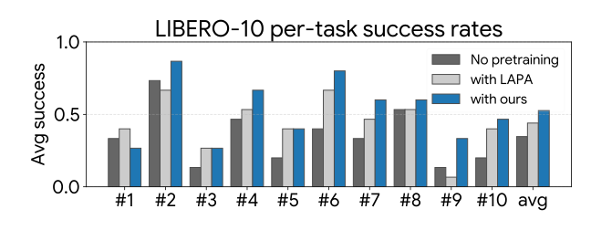

InvAct: View and Scene-invariant Atomic Action Learning from Videos
⚛️ TL;DR: For the first time, we learn atomic action embeddings that are invariant to both viewpoint and scene changes. This enables robust retrieval and transfer across short- and long-horizon human-centric and robot-centric action downstream tasks.
Select a query clip below, and InvAct will fetch the most similar atomic-action videos from Ego-Exo4D validation set. Shuffle queries to see different queries. InvAct does not use text prompts at inference, they are only given here for visualization.
Abstract
Action learning should capture interaction dynamics that generalize across viewpoint and scene changes. Although recent work pursues view-invariant representations, these methods often overfit to scene cues, weakening their ability to model and match fine-grained interactions, such as atomic actions. We address this with InvAct, the first atomic action embedding model invariant to both ego-exo viewpoint shifts and scene changes. Exploiting the sparsity of actions, we propose structured token commitment, a hard row-wise token routing mechanism that separates action from non-action content within the transformer, allowing the action token to focus on interactions while non-action content is implicitly routed to register tokens and discarded. We further introduce a novel unified scene-aware contrastive objective that attracts same-action clips across scenes and repels different actions from the same scene. InvAct significantly outperforms baselines in cross-view and cross-scene action retrieval, transfers strongly to unseen datasets, decreases scene-bias significantly, has good language understanding, enables long sequence actions via composition of atomic embeddings, and shows promising results on robotic manipulation tasks.
Atomic actions vs. keystep actions
Keystep actions (e.g. checking for damages, cooking omelet, repairing a bike, unboxing a package) describe longer, higher-level procedures that often correlate strongly with objects, the context of the scene, and appearance. These higher-level activities can be decomposed into atomic actions (e.g. pushing, pulling, cutting, placing a box on a table), which are short interaction-centric primitives, characterized by fine-grained temporal dynamics and contact patterns. We utilize the notation in Ego-Exo4D dataset for atomic and keystep actions.
We train with atomic actions, and demonstrate on both atomic actions and keystep actions.

The problem of view-invariance with keystep actions
Videos above illustrate retrieval behavior in the Ego-Exo4D validation set, with all scenes included in the retrieval pool, for our method and baseline Viewpoint Rosetta.
It can be seen that prior methods like Rosetta often exploit a shortcut by ranking top-k clips according to shared scene context, such as layout and objects, rather than interaction dynamics.
This specific failure mode is most evident in the ego-exo examples. The method may return a hit with a superficially similar action, but it does so by retrieving clips from the same kitchen and matching static cues such as the blue bowl and brown cabinets, rather than recognizing the underlying interaction. As a result, it can miss stronger dynamic matches that occur in different scenes.
In comparison, InvAct can retrieve diverse, scene and view-invariant clips, that match the query action dynamics more faithfully.
Downstream on VLA pretraining for robotic manipulation
We further evaluate our action embeddings on simulated robotic manipulation tasks. Following LAPA, we use latent actions for VLA pretraining and measure task success rates. Specifically, we pretrain OpenVLA with atomic actions derived from both LAPA and our method on the SSV2 dataset, and then post-train on LIBERO using its task labels. Performance is evaluated on the LIBERO-10 benchmark in simulation.
Right figure shows that our embedding space improves VLA performance and increases success rates on downstream robotic tasks. Specifically, baseline achieves 34% success rate, LAPA improves +10% and ours improve +18% over the baseline. These results indicate that our representations can help bridge human-centric action understanding and robot-centric action learning.

Qualitative comparison
We compare the retrieval grids from InvAct (top) and Viewpoint Rosetta (bottom). Each column shows a fixed query video (leftmost video in each row) and top-3 matches in the PhyWorld dataset. The baseline mostly behaves like a near-static visual matcher, prioritizing color and shape similarity (column 1 and 3) over the temporal cues required to distinguish fine-grained actions. InvAct can successfully retrieve same-directioned matches with diverse appearances.
Additional atomic-action video-video retrieval grids across view pairs from Ego-Exo4D dataset.
Quantitative results
The table reveals InvAct can match keystep-specific trained methods, and outperforms all baselines on atomic-action retrieval, in cross-scene and cross-view scenarios. We use the atomic-action trained InvAct model for both atomic and keystep action retrieval.
g and x denote ego and exo, respectively. For keystep actions on our method, we use the atomic-action checkpoint without finetuning.
Best three results are shown in bold, underlined, and italic. SV is single-view (ego), and MV is multi-view (ego-exo).
| Group | Method | Atomic action hit-rates (@10) | Keystep action hit-rates (@10) | ||||||||||
|---|---|---|---|---|---|---|---|---|---|---|---|---|---|
| Cross-scene (↑) | Cross-view (↑) | Cross-scene (↑) | Cross-view (↑) | ||||||||||
| g→g | x→x | avg. | g→x | x→g | avg. | g→g | x→x | avg. | g→x | x→g | avg. | ||
| Random | 3.04 | 3.01 | 3.02 | 2.15 | 3.70 | 2.92 | 6.23 | 7.35 | 6.79 | 6.59 | 6.72 | 6.65 | |
| Domain agnostic | CLIP | 16.01 | 15.33 | 15.67 | 14.03 | 16.25 | 15.14 | 26.76 | 20.47 | 23.61 | 17.71 | 17.68 | 17.70 |
| DINOv3 | 19.08 | 15.11 | 17.09 | 13.60 | 16.32 | 14.96 | 28.50 | 20.40 | 24.45 | 24.43 | 19.42 | 21.93 | |
| V-JEPA 2 | 17.83 | 14.05 | 15.94 | 15.32 | 18.40 | 16.86 | 33.75 | 21.55 | 27.65 | 14.40 | 17.45 | 15.93 | |
| FlowFeat | 23.56 | 24.04 | 23.80 | 19.70 | 23.54 | 21.62 | 21.25 | 15.51 | 18.38 | 11.84 | 12.89 | 12.37 | |
| LiFT | 27.84 | 23.15 | 25.50 | 21.71 | 27.08 | 24.39 | 25.88 | 19.02 | 22.45 | 20.79 | 16.23 | 18.51 | |
| Robot centric | LAPA | 25.24 | 26.52 | 25.88 | 15.96 | 13.82 | 14.89 | 13.58 | 15.28 | 14.43 | 15.09 | 13.94 | 14.51 |
| VILA | 19.21 | 19.51 | 19.36 | 22.59 | 29.51 | 26.05 | 33.03 | 29.06 | 31.04 | 12.36 | 7.22 | 9.79 | |
| Human centric (SV) | TimeSFormer | 26.21 | 20.73 | 23.47 | 19.55 | 23.87 | 21.71 | 30.50 | 19.84 | 25.17 | 17.55 | 15.97 | 16.76 |
| LaViLa | 28.52 | 24.25 | 26.39 | 23.29 | 23.84 | 23.57 | 41.26 | 17.68 | 29.47 | 20.79 | 16.43 | 18.61 | |
| EgoVLP | 29.61 | 21.77 | 25.69 | 22.34 | 23.52 | 22.93 | 49.82 | 26.01 | 37.91 | 29.94 | 22.53 | 26.23 | |
| EgoVLPv2 | 29.35 | 22.00 | 25.67 | 21.88 | 23.54 | 23.59 | 48.11 | 23.84 | 35.98 | 27.55 | 22.43 | 24.99 | |
| Human centric (MV) | AE2 | 14.88 | 14.06 | 14.47 | 15.47 | 15.39 | 15.43 | 29.35 | 33.13 | 31.24 | 11.22 | 11.41 | 11.32 |
| BYOV | 16.84 | 15.94 | 16.39 | 14.57 | 14.33 | 14.45 | 41.06 | 37.49 | 39.27 | 20.47 | 21.06 | 20.75 | |
| VI Encoder | 19.95 | 18.64 | 19.30 | 19.01 | 20.40 | 19.71 | 19.71 | 16.17 | 17.94 | 16.63 | 17.22 | 16.93 | |
| SUM-L | 29.58 | 23.33 | 26.46 | 22.29 | 23.27 | 22.78 | 36.04 | 14.73 | 25.39 | 15.71 | 9.81 | 12.76 | |
| Rosetta | 22.38 | 20.95 | 21.66 | 21.66 | 21.21 | 21.43 | 43.82 | 34.42 | 39.12 | 39.94 | 34.77 | 37.35 | |
| Ours | 34.03 | 31.03 | 32.53 | 31.55 | 32.02 | 31.79 | 44.18 | 38.54 | 41.36 | 36.34 | 35.62 | 35.98 | |
Zeroshot Retrieval
Explore zeroshot retrieval transfer on NTU RGB+D, SSV2, and PhyWorld datasets. Click on a video to assign it as the query, and sort the rest as a gallery based on its action similarity.